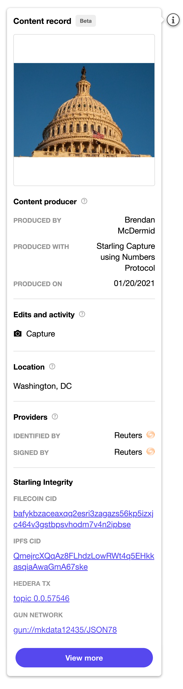
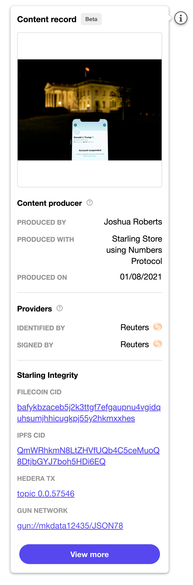
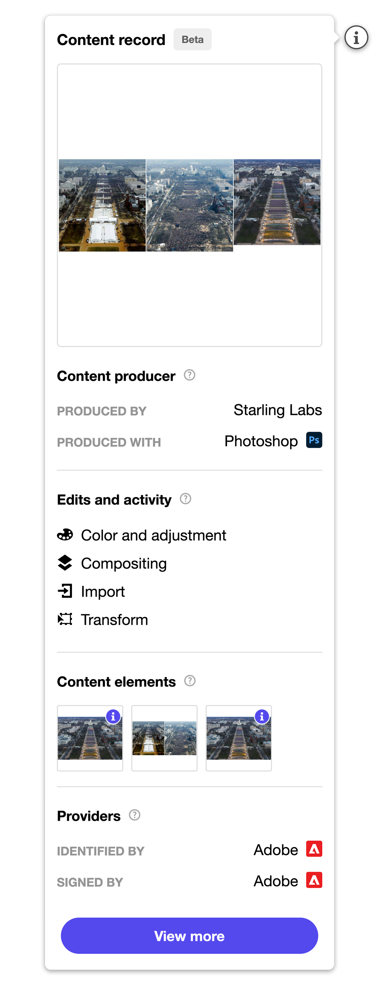

ANALYSIS
three challenges of our digital age.
By deploying during the 2020 election transition, we wanted to stress test our technology in a news cycle that was bound to be charged.
Could image authentication help readers come to their own conclusions about the historic events between the election and inauguration?
We had no idea just how historic and just how fraught these days would be.
Looking back, it’s clear they surfaced the key challenges of our digital age.
How can we securely:
OUR DIGITAL PHOTOS?
Challenge #1
How do we securely [capture] digital photos?
Given the unfounded allegations of photo manipulation at the 2017 presidential inauguration, our goal was to take secure photos of the event, immediately create a fingerprint of each photo and affix a time and location stamp on the image milliseconds after light hit the camera sensors.
The Problem:
Today, most digital photographs are unencrypted and do not have a tamper proof seal to ensure that image data and metadata are secured.
Bad actors can exploit this vulnerability to manipulate photos through image-editing tools or new AI-generated tools, like deep fakes, that can distort the essential facts photojournalists seek to capture.

As images spread across the internet to billions of users, the problems compound, often making it impossible to determine which version of a photo is the original.
Tools are readily available that can solve this problem. For over five years, mobile phones have been shipped with advanced software and hardware to protect all forms of data, including photos. But these tools are either entirely dependent on or hamstrung by Apple and Google’s power as they set the standards for how data is authenticated through iOS and Android. Our approach was to leverage this underlying hardware to protect images and open it up to give users maximum control.

WHAT WE BUILT:
Numbers Protocol, a startup in Taipei focused on data integrity, joined the lab to rapidly engineer a Starling capture prototype for the HTC Exodus 1 mobile phone.
- Using and contributing to the open source Proof Mode library, developed by the Guardian Project and Witness, together we built a prototype capture app that pairs each photo with advanced mobile phone sensor metadata (such as location, time, date, etc.)
- The app then generates a unique fingerprint, or hash, of all the data at the point of capture.
- We sign each hash using encryption available directly on the phone’s hardware using a firmware library called Zion, created by HTC as an open source tool to let users access advanced cryptography.
- Zion leverages hardware-based encryption available in a secure enclave on the Qualcomm Snapdragon SoC to seal files outside of the Android operating system and minimize the risk of attack.
HOW WE DEPLOYED:
- On the day of the inauguration, Reuters photographer Brendan McDermid took photos with our prototype from his position on the risers looking over the ceremony.
- The photos were hashed and encrypted on the device and then transmitted directly into Reuters’ cloud-based content management system, Fotoware.
- We used the CAI standard and tools to inject the key metadata for Starling capture directly into the image file.
- Note: due to time limitations only used cameras on mobile phones for capture. We did not deploy our Starling CCAPI capture solution that pairs phones to receive and secure photos from external professional-grade cameras. To learn more about these prototypes with Canon, please see this earlier case study we worked on with Reuters in March 2020.
WHAT WE LEARNED
- There is great promise in hardware-based mobile phone encryption. It performs well, is growing more affordable, and allows for rapid encryption of hashes and files themselves to protect photojournalists’ work.
- Photographers need to have absolute control over what metadata is stamped on their images. They should not be compelled by governments or technology providers with any settings that limit their ability to determine what data is safe to package in a photo. For example, location data could put individuals in danger by bad actors or even authoritarian regimes.
- Hardware-based encryption is an improvement over software-based solutions but is still vulnerable to exploits. Jailbroken or rooted devices can manipulate all forms of metadata, like GPS spoofers to fake location data. An open-source approach to software and firmware is the best way to bring as many security professionals into the fold to enhance and maintain these security features.
- As companies release commercial versions of hardware-based image authentication, there needs to be a transparent conversation about how mobile phone manufacturers telecommunication firms are implementing the right privacy features to protect journalists and consumers.
Challenge #2
How do we securely [store] digital photos?
We stored multiple copies of photos across multiple geographies to secure this record of the historic presidential inauguration. Were these measures sufficient to withstand the test of time?
The Problem:
Mainstream social media platforms or infrastructure providers provide the dominant and most reliable forms of storage and publishing on the internet, but each has outsized control over if and how data is stored.
We deployed storage on decentralized, or dWeb, storage systems that provide innovative alternatives to providers like Amazon Web Service controls which alone controls nearly half of the public cloud infrastructure.
Our approach was experimental. We sought to test the latest cryptographic methods that are unique to the dWeb and were curious to see if some of the most nascent systems could respond to the challenge of our storage needs. For instance, the Filecoin mainnet we used had only gone live 19 days before we started uploading our files.
However, on Day 64 —Jan. 6— the stakes for our work completely changed.
In the days following the insurrection at the U.S. Capitol, the centralized architecture of today’s centralized cloud storage was suddenly thrust into the spotlight.
In quick succession, Twitter, Facebook, Google, and Amazon all took quick action to revoke access to users and companies who were using their platforms to facilitate spread misinformation about the election and/or incite violence to overturn the results of the election.
A supporter of U.S. President Donald Trump holding a sign takes part in a rally at Beverly Hills Gardens Park in Beverly Hills, California, U.S. January 9, 2021. REUTERS/Ringo Chiu
Actions like Donald Trump’s Twitter account and removing the social media site Parler from Mobile app stores and AWS became themselves seminal moments of history. Activists from across the political spectrum reacted by rushing to take down and/or preserve incriminating evidence of those participating in the events. Via Twitter, the FBI asked for help with their investigations and received more than 100,000 pieces of digital evidence.
The debates around the appropriateness and legality of all these actions erupted. They revealed just how powerful centralized storage solutions can be as they host and moderate our virtual town square.
In exploring alternative storage platforms, we evaluated how content publishing, moderation, and accountability might change in the years to come.

WHAT WE BUILT :
Teams at Numbers, Protocol Labs, IBM, Hedera, and Gun worked together to help us architect a prototype that orchestrated storage of photos and their metadata directly from Reuters’ content management system across the following dWeb protocols:
- Filecoin: Sets of photos were uploaded to a Filecoin miner for sealing and cold storage storage. Using a proof-of-space-time, Filecoin provides a continuous record that files are secure and have not been tampered with.
- Hyperledger Fabric on the IBM Cloud’s Blockchain Platform: Each metadata record, such as the caption or photographer byline added by an editor to a photo’s record, is relayed to a Hyperledger Fabric peer for notarization on a private permissioned ledger.
- IPFS: Photos selected for publishing on our website were then uploaded onto the IPFS network for hot-storage and retrieval.
- Hedera Consensus Service (HCS): Each transaction posted to Hyperledger is recorded on HCS using a hashgraph that rapidly orders and stamps each entry.
- Gun: All the final archive metadata is syndicated by a relay peer on the Gun network to securely store this mutable data as it updates.
HOW WE DEPLOYED:
- On the evening of each day following the election, Reuters photo editor Kevin Coombs took photos from the newswire and registered them on our storage prototypes to authenticate their secure storage.
- Each edit he made was preserved on various blockchains and hashgraphs, meaning that any changes one sees can be traced back to a record of that change.
- We used the CAI standard and tools to inject all this storage metadata from Starling storage directly into an image file.
WHAT WE LEARNED
- A return to the internet’s original design of decentralized storage is welcome and overdue. The events that unfolded during this case study, showed that the convenience and cost of today’s cloud infrastructure are not the only features that matter. In fact, they have significant trade-offs.
- With powerful compute capabilities now available at the edge of networks, cryptography can make distributed systems even more secure than their centralized rivals.
- Our solution worked because it stayed decentralized. By linking multiple dWeb protocols, we allowed each to do what they do best. Some were more appropriate for long term storage, while others could accommodate performance. Integration between these protocols was easier than initially envisioned and point to more advances that could easily be made in the future.
- The CAI standard’s approach — injecting Starling metadata data directly into the file — was a revelation. It is the next logical step in decentralization. There is a broad understanding of the benefits of making networks and servers autonomous, open, and fault-tolerant. CAI taught us how the same principles could be applied to data objects themselves.
- Finally, although distributed storage systems provide an important counterbalance to big tech’s dominance over the internet, intrinsically they do little to solve the challenges of content moderation. The tools can be used by bad actors to evade accountability. However, uniquely the tools show how new systems can enable fact-checkers and content moderators to build interoperable layers to provide more transparent, more pluralistic, and therefore more robust solutions to content moderation. Decisions should not be left to one CEO, one company, or one even one standards board to determine what is fit for consumption. Creating a credible alternative requires investment and a culture of civic-minded engagement.
Challenge #3
How do we securely [verify] digital photos?
Post-processing of images after capture is a reasonable step that all news organizations undertake. For “hard news” photojournalism, typically very little is changed with photographs. Reuters ethics handbook mandates that "materially altering a picture" can lead to dismissal.
The Problem:
With trust in journalism at historic lows, there are many missed opportunities to show news readers the level of professionalism journalists bring to their work.
What has been missing is a simple way to log changes to a photo, embed them in the image, and easily display them for readers. While there have been some brilliant proposals in years past, like the Four Corners Project, that have designed innovative ways of presenting this information to readers, none gained adoption at scale.
For this case study, we chose to focus on one main image to prove out this signal flow: a side-by-side comparison of the presidential inaugurations in 2009, 2017, and 2021.


The compositing, cropping, and layout of the photos in this side-by-side comparison was done to bring clarity to readers. For the first time, we have a way to transparently show how the images were arranged and why that process can be trusted.
In the future, these upstream opportunities for transparent reviews of photographic content by editors can also be supported downstream by fact-checkers. For example, the CAI envisions that after an image is published fact-checkers can append their analysis of images directly within the images themselves. This empowers readers to see the evolution of a photo’s acceptance, seek more information, and come to their own conclusions about the integrity of the news they are viewing.
WHAT WE BUILT:
- After images were securely stored per the methods described above, we downloaded a select group of them to test a new image editing process.
- We used a private beta of Photoshop provided by Adobe to track and register any changes made to a photograph during its editing. The log of changes was injected into the photo by Photoshop using the CAI standard.
HOW WE DEPLOYED:
- For a select set of images, we tested how these new Photoshop features could track resizing and compositing of the photographs.
- We used the CAI standard and tools to inject all the image editing metadata directly into the image file for display on the web.
WHAT WE LEARNED
- Adobe’s Photoshop beta was intuitive and straightforward. Users need to have only a basic level of skill to turn on the CAI tracking features and embed that data upon export.
- The preview feature, in particular, was useful to see how CAI can be presented to users.
- Adobe took adequate measures to ensure the default settings on CAI tools preserve privacy. Namely, users had to opt-in to include track action with CAI and choose which CAI data to embed in the files. This is essential.
- Although the CAI standard envisions a robust and flexible identity management system, for this version of the tool, the CAI’s registers user information based on Adobe’s Creative Cloud identity system. While convenient, it’s evident to us and the CAI teams that this is just the beginning of a complex discussion on how to display and protect user information. Organizations will want to have options to limit levels of disclosure and prefer to use advanced (and decentralized) methods to establish their users’ identity.
- The user experience of displaying post-processing of information on a photo needs to be experimented with in far more depth. There are many advantages to seeing how an image has been transformed. But consider a case of cropping. If an editor crops a photo in a misleading way the CAI tracking feature could reveal that choice. But if a photographer intentionally excludes a key fact from a photo by keeping it out of the frame and then uses CAI to make minor image enhancements like brightness and contrast adjustment, what then? If CAI data shows there is no cropping of the photo in Photoshop, does that mean the photo really captured the full view of the scene? These kinds of signal conflicts demonstrate how important reader education remains at each step of the CAI user experience.
- Overall, the CAI system shows early promise in its ability to address the issues we discuss in this case study. It has created a valuable forum for technology companies, social media platforms, and journalists to continue to collaborate on finding solutions.
- Finally, as a caveat, this case study was primarily a study of end-to-end user experience and system interoperability of security protocols, and not end-to-end security. In particular, hand-offs between the systems that we tested were not hardened or subjected to penetration tests. We did however track vulnerabilities as we encountered them and look forward to helping our collaborators strengthen their systems as they emerge from the lab as prototypes and become finished products.